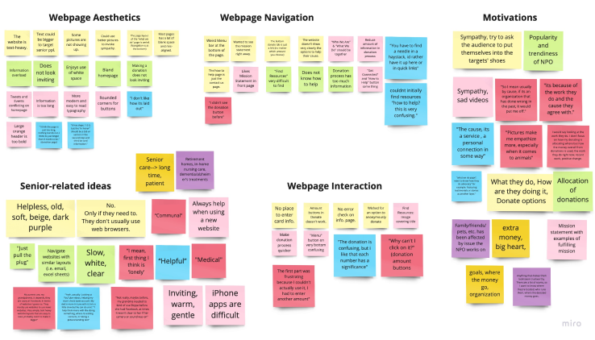
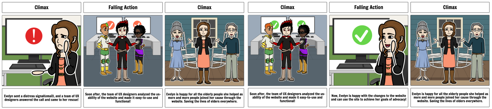
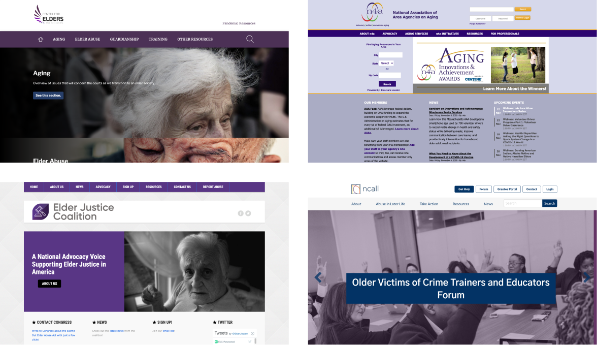
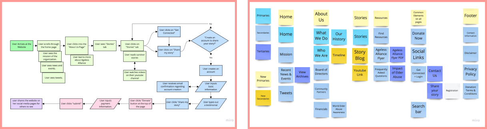

UX/UI Designer

The Ageless Alliance website is not
suitable for users to navigate easily.
Our aim was to design a
user-friendly interface with clear
navigation, and good design
heuristics.
UX/UI Designer
Team of 3. 3-week sprint
An overabundance of information, a malfunctioning donation page and redundant links make the site difficult for users of any age to navigate. How might we make the site funcional, user-friendly, while highlighting the mission of the non-profit?
Our aim was to design a user-friendly interface with clear navigation, and good design heuristics so that users may find necessary resources and important information regarding elder abuse.
Our team approached the NPO website redesign
by analyzing it’s heuristic design elements, we
conducted user tests and interviews, then
prototyped, tested and iterated on our design.
Heuristic analysis, user persona, user motivation, competitor analysis, storyboard
PrototypingCard sorting, user flow, wireframes, prototypes, prototype testing, style guide, user testing
Wireframes & TestingIteration of mobile and web prototypes, v2 prototype testing
ConclusionsNext Steps and final thoughts

Our first task was to identify possible paint points that users experienced on the Ageless Alliance Website. We identified our user persona and their motivation for visiting the site. Ultimately, our goal is to help users such as Evelyn to find resources that advocate for senior rights.

We found that the original aesthetic of the page is bland and often has too much text on a single page. The navigation from page to page is confusing as some key elements are either unclear or not working. Sympathy, personal connections, and goals of NPOs determine if users want to make donations. Most think seniors are not tech-savvy. Donation is one of the most important function in an NPO’s webpage.
Designing a scenario for our user was important in identifying a possible solution to the pain points our interview subjects faced when testing.
Researching other websites that offered a similar solution helped us identify strengths, weaknesses and features we felt would allow us to design a user-friendly and informative website. We found that sites either had an overabundance of information or simply lacked information and had a lot of blank space throughout. We also found that impactfcul imagery creaated a more empathetic tone, something we sought on our own design.
Our goals were to simplify the navigation and consolidate to reduce redundant links that caused confusion or simply don’t work. Next, we wanted to highlight Donation & Stories pages.
It wes vital that we did user testing to identify where we lacked in our initial wireframe prototypes so that we may improve our design.


Researching other websites that offered a similar solution helped us identify strengths, weaknesses and features we felt would allow us to design a user-friendly and informative website.
We found that sites either had an overabundance of information or simply lacked information and had a lot of blank space throughout. We also found that impactfcul imagery creaated a more empathetic tone, something we sought on our own design.
Next Steps: Chat message feature on website-links to support groups and professionals who can chat in real time Redesign the Ageless Alliance Flyer Full suite rebranding and iterating on current web + mobile designs Building a relationship with NPO for more resources and to build connections.